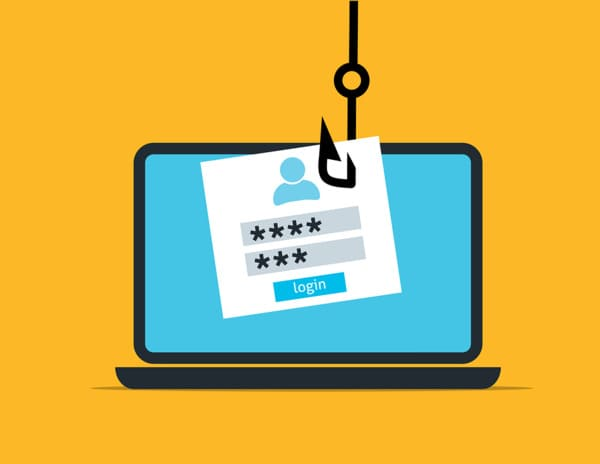
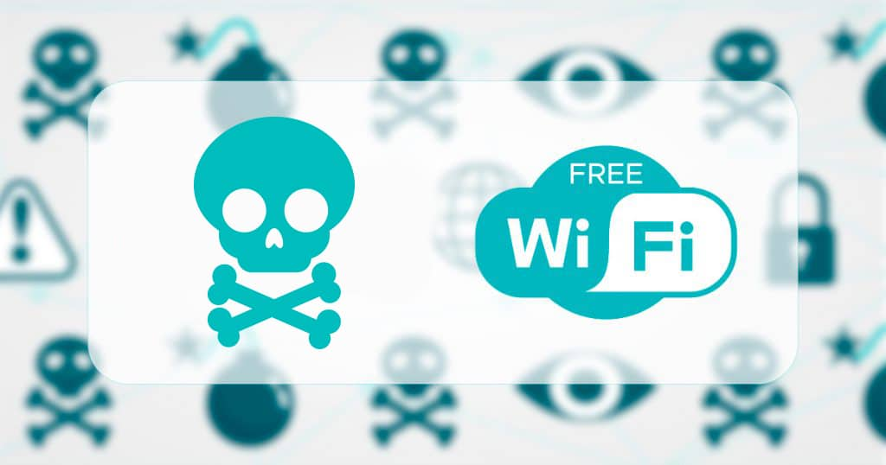

Consejos Prácticos
- Usa contraseñas únicas y fuertes: mezcla letras, números y símbolos.
- Evita compartir información sensible por mensajes no seguros.
- Configura la autenticación en dos pasos para tus cuentas.
- Desconfía de correos electrónicos que pidan actuar con urgencia.
- Revisa la dirección de los sitios web antes de ingresar datos personales.

Ejemplos Reales
-
Phishing: No abras correos de remitentes desconocidos con enlaces sospechosos.

-
Redes Wi-Fi públicas: No accedas a tu banca en línea o cuentas importantes mientras uses redes públicas.
